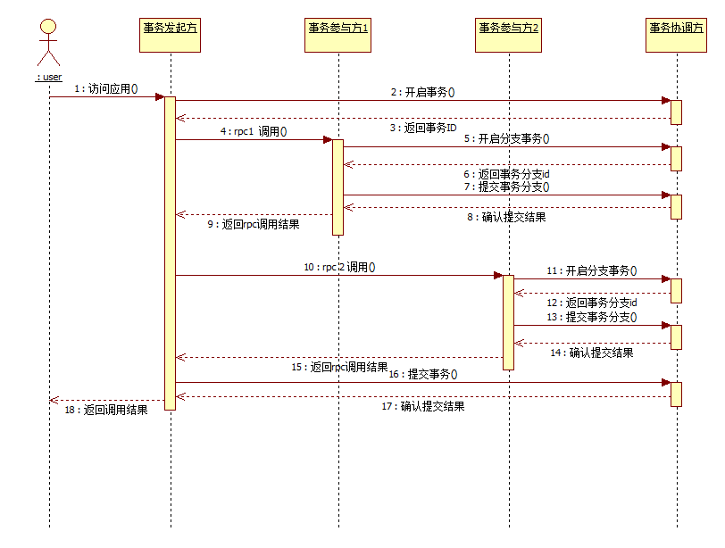
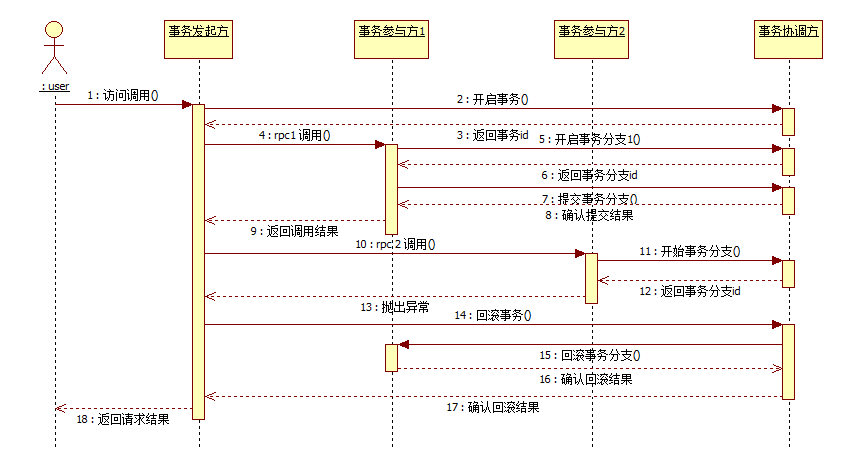
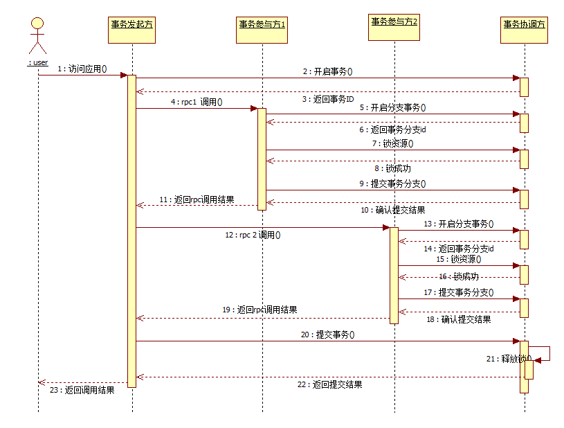
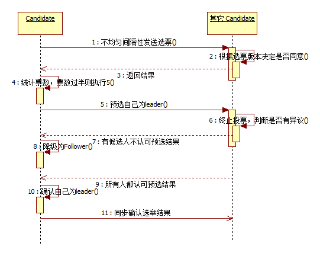

- 事务简介
- 客户端接入
- 服务端部署
- 提交流程
- 回滚流程
- 带锁事务流程
- 分布式选举
事务简介
Rabbit ORM从v3.3.0以后新增了分布式事务的特性支持。该事务是一种基于undo log的事务。本质上是柔性事务。undo log是通过代理数据库请求，反向解析插入到roll_back_info表的。
所以在使用前需要先在目标库中建回滚表，如果是多数据源则每个数据源都需要建立回滚表。建表sql如下：
--- 建表sql(mysql) CREATE TABLE ROLL_BACK_INFO ( ID BIGINT NOT NULL AUTO_INCREMENT COMMENT '主键', TX_BRANCH_ID BIGINT COMMENT '事务分支ID', TX_GROUP_ID BIGINT COMMENT '事务组ID', CREATED_DATE DATETIME COMMENT '创建时间', ROLLBACK_ORDER BIGINT COMMENT '回滚顺序', ROLLBACK_INFO LONGBLOB COMMENT '回滚信息', MODIFIED_DATE DATETIME COMMENT '创建时间', ROLLBACK_STATUS VARCHAR (16) COMMENT '回滚状态', DATASOURCE_NAME VARCHAR (50) COMMENT '数据源名字', APPLICATION_NAME VARCHAR (50) COMMENT '应用名字', PRIMARY KEY (ID) ); --- 建索引 CREATE INDEX MODIFIED_DATE_INDEX ON ROLL_BACK_INFO (MODIFIED_DATE);然后是引入依赖包
<dependency>
<groupId>rabbit.open</groupId>
<artifactId>dtx-client</artifactId>
<version>3.3.0</version>
</dependency>
分布式事务工作原理如下：
客户端接入
Rabbit ORM的分布式事务客户端采用代理增强的方式为用户完成事务协调通信。增强配置如下：先配置事务管理器, "applicationName"是应用的名字。
相同的接入方需要使用相同的名字，在事务回滚时，服务端会随机选择一个实例回滚，直至回滚成功为止。"host"参数为分布式事务的服务端信息，多个服务端之间以逗号分隔。
<!--针对dubbo的分布式事务管理器-->
<bean id="dubboTransactionManager" class="rabbit.open.dtx.client.rpc.support.DubboTransactionManager" destroy-method="destroy">
<constructor-arg name="applicationName" value="user-app"/>
<constructor-arg name="hosts" value="10.9.49.59:10010, 10.9.49.60:10010"/>
</bean>
然后配置数据源代理，同一个数据源的名字必须全局唯一。数据源的名字是构成数据锁的因子，如果相同的数据源配置了不同的名字，那么可能造成数据锁失败。
代理数据源主要完成对sql语句的反向分析，实现回滚信息的生成。
<!-- 数据源代理，通过sql解析实现回滚日志的插入 -->
<bean id="txDataSource" class="rabbit.open.dtx.client.datasource.proxy.TxDataSource">
<!--配置JDBC数据源-->
<constructor-arg name="dataSource" ref="rabbit"/>
<!--一个应用下如果有多个数据源，那么这个名字不能重复-->
<constructor-arg name="dataSourceName" value="txDataSource"/>
<!--分布式事务管理器-->
<constructor-arg name="transactionManger" ref="dubboTransactionManager"/>
</bean>
最后配置注解增强器，该类实现对注解的增强，完成事务的网络通信请求。
<!-- dtx 注解增强器 -->
<bean id="transactionEnhancer" class="rabbit.open.dtx.client.enhance.DistributedTransactionEnhancer">
<property name="transactionManger" ref="dubboTransactionManager"/>
</bean>
最后就是在需要使用分布式事务的地方使用增强注解"@DistributedTransaction"。
@DistributedTransaction()
@Transactional
public void addProduct(Product product) {
add(product);
// do something
add(product);
}
"@DistributedTransaction"注解有多个默认属性，分别如下：
public @interface DistributedTransaction {
// 任务超时时间, 默认永不超时
long transactionTimeoutSeconds() default Long.MAX_VALUE;
// 回滚超时时间
long rollbackTimeoutSeconds() default 3L;
// 事务传播特性，默认没有事务就直接开启事务
Propagation propagation() default Propagation.REQUIRED;
// 默认不加锁
Isolation isolation() default Isolation.UNLOCK;
// 回滚策略
RollbackPolicy rollback() default RollbackPolicy.STRICT;
}
服务端部署
Dtx Server是分布式事务的协调端。负责对分布式事务进行协调，对事务上下文信息进行统一管理。既可以单机部署，也可以集群部署。
部署流程如下：
先建一个web工程，或者springboot工程，然后引入server端的依赖包：
<dependency>
<groupid>rabbit.open</groupid>
<artifactid>dtx-server</artifactid>
<version>3.3.0</version>
</dependency>
配置基于redis的事务管理器(也可以配置基于redis集群的事务管理器)：
<bean id="redisTransactionHandler" class="rabbit.open.dtx.server.handler.RedisTransactionHandler">
<property name="jedisClient" ref="pooledJedisClient"/>
</bean>
<!--jedis client 配置-->
<bean id="pooledJedisClient" class="rabbit.open.dtx.server.jedis.PooledJedisClient">
<constructor-arg name="pool" ref="jedisPool"/>
</bean>
<!--jedis pool 配置-->
<bean id="jedisPool" class="redis.clients.jedis.JedisPool">
<constructor-arg name="poolConfig">
<bean class="org.apache.commons.pool2.impl.GenericObjectPoolConfig">
<property name="maxTotal" value="10"/>
</bean>
</constructor-arg>
<constructor-arg name="host" value="localhost"/>
<constructor-arg name="port" value="6379"/>
</bean>
然后配置网络事件处理器：
<bean id="dtxServerEventHandler" class="rabbit.open.dtx.common.nio.server.DtxServerEventHandler">
<property name="transactionHandler" ref="redisTransactionHandler"/>
</bean>
最后配置tcp server集群：
<bean id="server" class="rabbit.open.dtx.server.DtxServerClusterWrapper">
<constructor-arg name="port" value="${dtx.server.port}"/>
<constructor-arg name="handler" ref="dtxServerEventHandler"/>
<constructor-arg name="candidateSize" value="3"/>
<constructor-arg name="nodes">
<list>
<bean class="rabbit.open.dtx.common.nio.client.Node">
<property name="host" value="${dtx.server1.ip}"/>
<property name="port" value="${dtx.server.port}"/>
</bean>
<bean class="rabbit.open.dtx.common.nio.client.Node">
<property name="host" value="${dtx.server2.ip}"/>
<property name="port" value="${dtx.server.port}"/>
</bean>
<bean class="rabbit.open.dtx.common.nio.client.Node">
<property name="host" value="${dtx.server3.ip}"/>
<property name="port" value="${dtx.server.port}"/>
</bean>
</list>
</constructor-arg>
</bean>
提交流程
dtx会在每个请求分支创建一次分支事务，事务的回滚信息会记录在应用的所使用的数据库中，对于正常提交的事务
dtx服务协调端则不再关系这些回滚信息，交由应用本地自行清理，默认清理10分钟之前的信息。提交流程大致如下：

回滚流程
事务回滚时会阻塞当前请求，dtx协调端会向应用分支发送回滚通知，应用则会根据记录在本地的回滚信息进行数据回滚。大致流程如下：

带锁事务流程
dtx允许用户根据自己的业务场景选择分布式事务是否锁资源。加锁模式的成本会略大于无锁模式。其流程如下：

分布式选择
dtx的协调端可以以集群模式进行工作，每个节点对于客户端来说都是一样的。客户端采用轮询机制进行负载均衡。客户端能自动发现服务端节点，也会自动踢掉离线的节点。
但是服务端节点本身仍会选举出一个leader来做一些特殊的业务，比如清理过期的事务上下文信息，并释放其占用的锁。
dtx的选举算法是对paxos的java实现，其流程如下：
